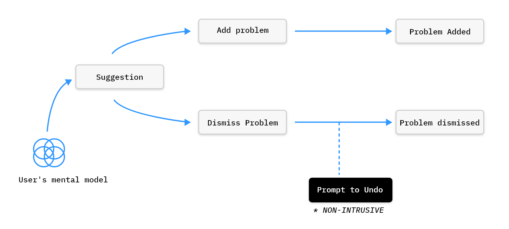
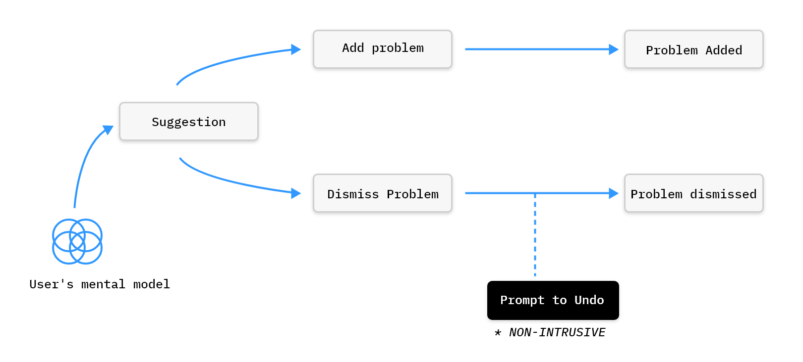
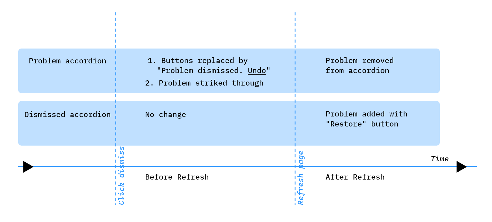

Brief
Cerner provides EMR(Electronic Medical Record) systems to hosiptals for several purposes where one of
the jobs is to
assist physician to enter details and diagnosis of patients.
ChartAssist is a component of the system which serves physician by:
- Suggesting new missed diseases to add
- Suggesting errors from already added diseases
Problem Statement
Make a flow for when a user selects the 'dismiss' action to remove a proposed documentation opportunity or clinical validation notification.
Below shows the image of the current state where the component is on the left and the details panel is on the right.
Initial expectations
The initial solution for this problem, suggested by stakeholders, was to click on "Dismiss" button.
Eventually the click would lead to model window asking for confirmation.
Problems with this solution:
- Suggestions are already intrusive
- Confirmation box creates a sense of doubt in the physician
- Physician is already busy with patients so this is frustration
- Your first decision has to be reaffirmed, leading to cognitive dissonance
- Larger percentage of clicks increased – 1 to add problem, 2 to dismiss, 3 to undo
- Confirmation dialogue on a negative action is reserved for highly critical actions or to bypass
warnings of high
priority
Below is the flow of what is actually required:

Below is the flow of what is was suggested by others:

Salient features of required solution
- The solution needs to unintrusive.
- Dismissal process should be simple and not with many steps.
- Click on "Dismiss" should change least number of elements.
- Minimum number of Refreshes need to be taken care of.
- Accidental dismissal/error should be handled.
- Error recovery should be easy to find and unintrusive.
Design solution suggested
When the physician decides to Dismiss the problem and clicks on the Dismiss button, the suggestion is striked through. Later when refreshed the suggestion gets added in a separate dismissed accordion something like recycle bin.

Time graph
This is avery heavy application, so we need to keep in mind to least number of refreshes posssible. Every change of state leads to a whole screen refresh. Here we can see how at 3 different times:
- After click of Dismiss
- Before refresh
- After refresh
